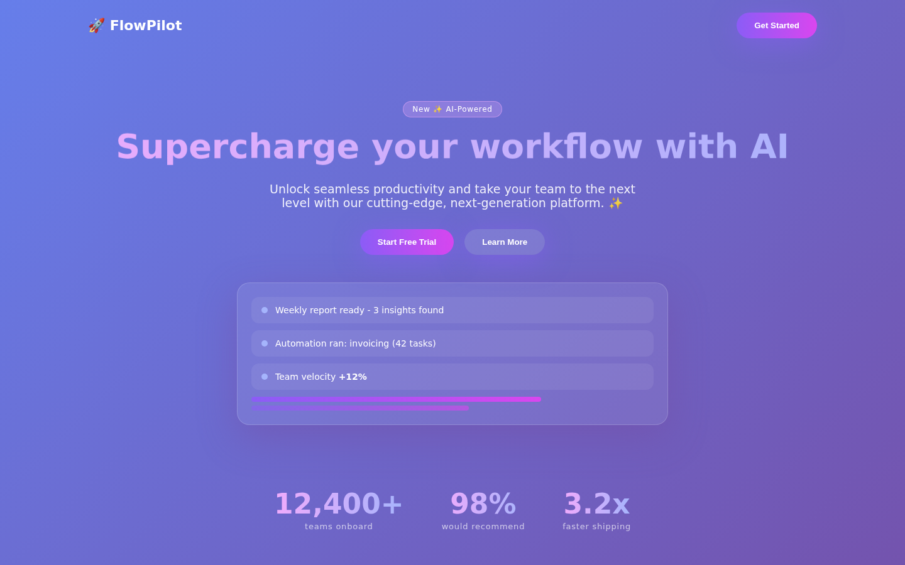
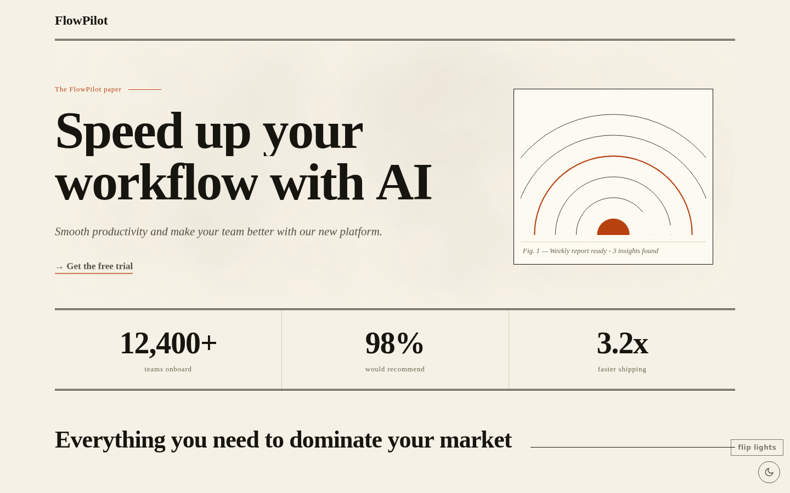
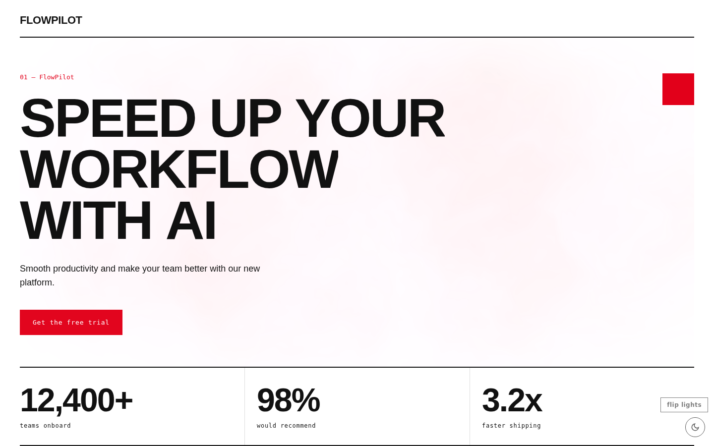
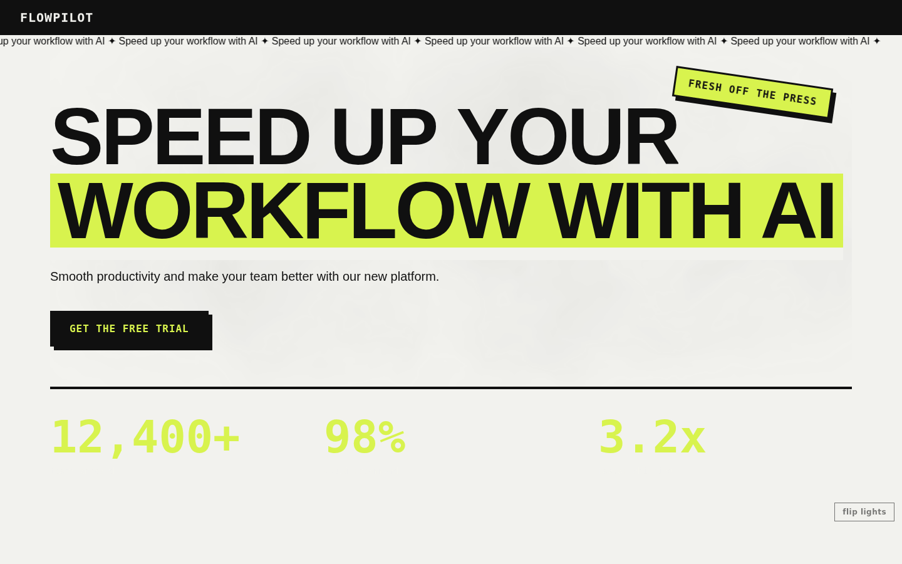
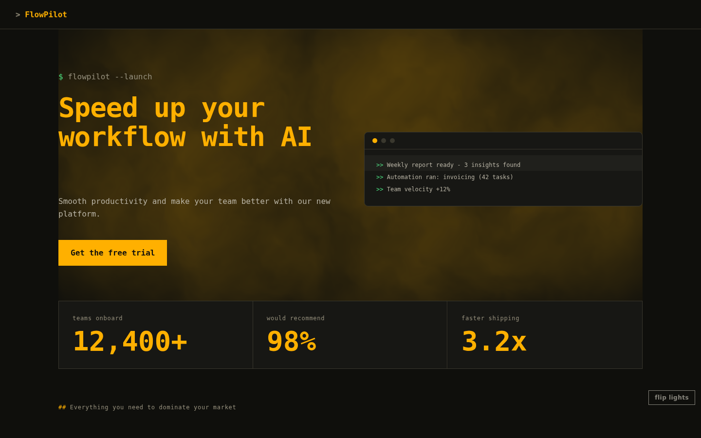
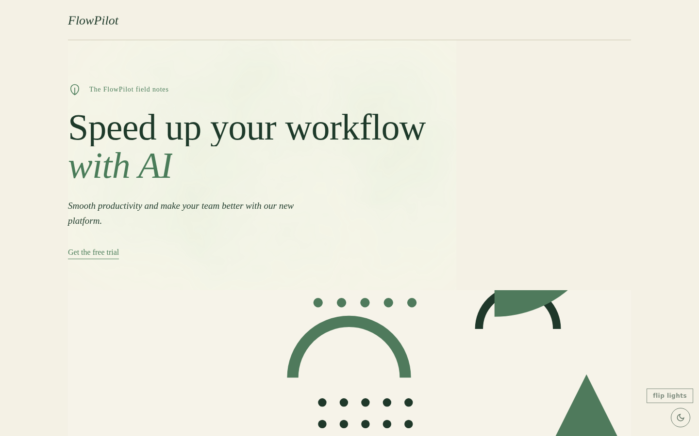
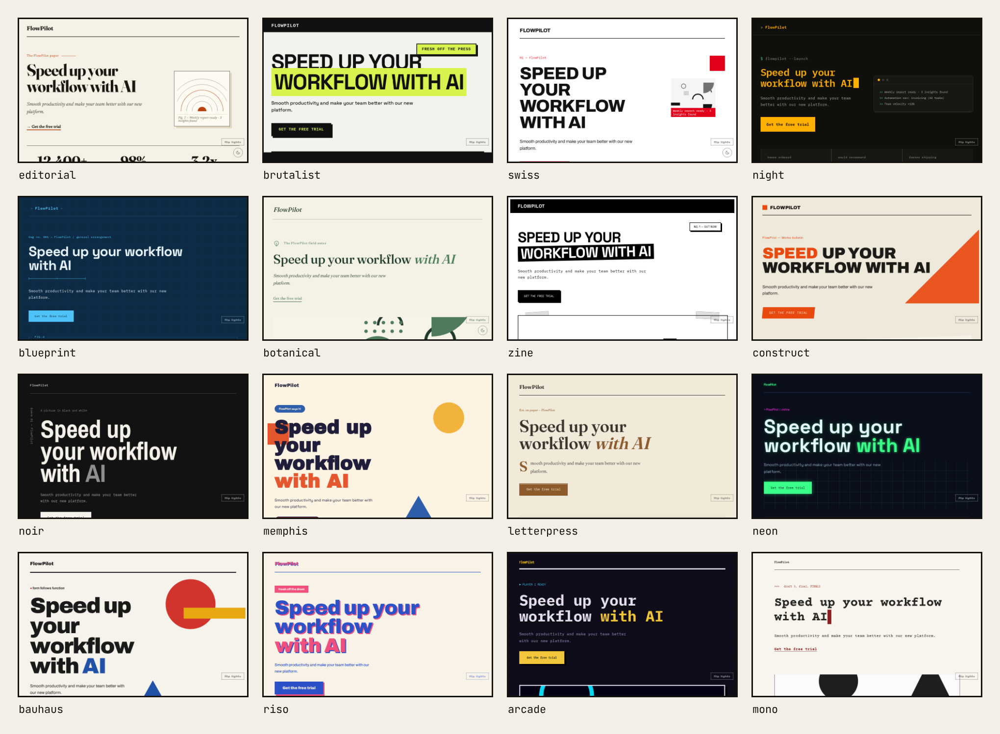
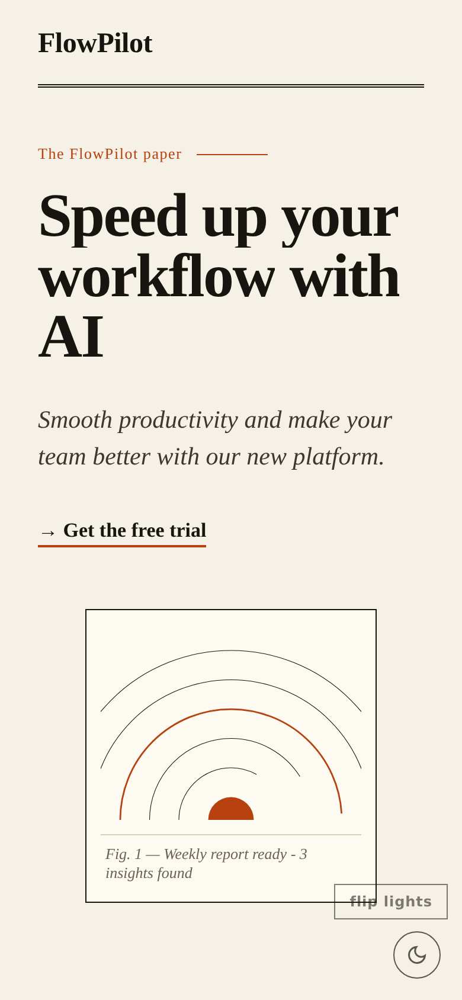

Free · local · MIT · no account, no API key
Every AI-built page looks the same. Ungeneric fixes that, and proves it.
A skill for your coding agent. It audits your page on 32 slop checks, rebuilds it with one of 16 real design systems, then re-audits the result to prove the fix.
npx --yes github:saladi-siddharth/ungeneric

01 The problem
You've seen this page a thousand times.

A purple gradient. A gradient headline. A pill that reads “New ✨ AI-Powered”. Glowing cards, emoji, stock copy like “Unlock seamless productivity”, and proof stats nobody measured.
Readers have learned to read all of it as “AI made this”. And it costs you their trust before they read a word.
02 The diagnosis
Ungeneric names every tell.
100/100
The real findings from auditing the page in Fig. 1. That is 32 source checks, plus 12 computed-style checks with --render.
- purple-gradient
- gradient-text
- tailwind-violet
- emoji
- stock-copy
- pill-radius
- glow
- default-font
- card-grid
- invented-proof
- nested-cards
- odd-spacing
- generic-hero
- loop-motion
- transition-all
- hover-scale
- no-reduced-motion
- badge-sparkle
- ai-powered
03 The fix
The fix, in three moves.
-
Audit
Score the page on 32 source checks and 12 rendered checks.
-
Rebuild
Restyle or recompose with one of 16 design systems. Your content and links survive.
-
Prove
Re-audit every rebuild. The CLI exits non-zero if the output did not improve.
04 The proof
Same page. Score 100 to 9.
Drag across the page, or focus it and use the arrow keys.

Before · 100/100 After · 9/100Before
100/100
After, editorial
9/100
05 One page, many voices
Sixteen design systems. Each a single JSON file.
Real rebuilds of the same page, each re-audited.





- editorial
- brutalist
- swiss
- night
- blueprint
- botanical
- zine
- construct
- noir
- memphis
- letterpress
- neon grid
- bauhaus
- riso print
- arcade
- manuscript
06 On a phone too
The rebuild holds up at 390 pixels.

07 Where you code
Works where you already code.
| Agent | Invoke with |
|---|---|
| Claude Code | /ungeneric |
| Cursor | /ungeneric |
| Codex CLI | $ungeneric |
| Google Antigravity | /ungeneric |
| GitHub Copilot / VS Code | /ungeneric in chat |
| Gemini CLI | "use ungeneric" |
| OpenCode | /ungeneric |
Install flags: --agents=claude,cursor · --all · --global
No agent? Use the CLI
node cli.mjs page.html -d swiss -o clean.html
- --polish
- Keeps the design, strips only the tells
- --json
- Machine-readable output
- --directions
- List the design systems
- --max-score N
- A CI gate
- --render
- Adds the 12 computed-style checks
- --annotate report.png
- An annotated report image
Or the local web tool
An offline web tool, index.html, with a before/after view on desktop and phone, a wipe slider and click-to-edit.
08 Honest scope
What it is, and what it isn't.
No images, no paid services
It generates no images and calls no paid services.
A heuristic, not a verdict
The slop score is a conversation starter.
Deterministic
Same input, same output, so you can diff it in CI.
Sixteen fixed systems
It picks from 16 fixed systems rather than inventing a bespoke design.
Install
Make your next page look designed.
npx --yes github:saladi-siddharth/ungeneric